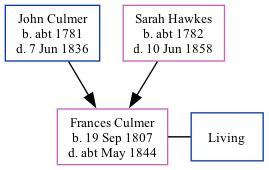

Frances Roberts (née Culmer) 1807 - c1844
[ Home ] | [ Calendar ] | [ Surnames Index ] | [ Family History ]The daughter of John Culmer (a parish clerk) and Sarah Hawkes, Frances Culmer, the four times great-aunt of Nigel Horne, was born in Stourmouth, Kent, England on Sep 19, 18071 and baptized there on Oct 11, 1807. She married George Roberts at St Mildred's Church, Preston, Kent, England on Jul 31, 1828.
She died c. May 1844 in Eastry, Kent2.
Parents
- John was born c. 1781
- Sarah Anne was born c. 1782
Citations
- Kent, England, Tyler Index to Parish Registers, 1538-1874 Online publication - Provo, UT, USA: Ancestry.com Operations, Inc., 2010. This collection was indexed by Ancestry World Archives Project contributors.Original data - Frank Watt Tyler. The Tyler Collection. Canterbury, Kent, England: The Institute of Herald
- England & Wales deaths 1837-2007 - Findmypast
Media
Canterbury Baptisms Transcription - GBPRS-CANT-B-96716006
England Marriages 1538-1973 - R_848215939/2
Kent, Canterbury Archdeaconry marriages 1538-1928 - GBPRS/CANT/M/97166074/2
England & Wales deaths 1837-2007 - BMD/D/1844/2/AZ/000619/016
England Births & Baptisms 1538-1975 - R_883278854
England Births & Baptisms 1538-1975 - R_883903415
Family Tree
Generated by Ged2Site. Last updated on Jul 20, 2025